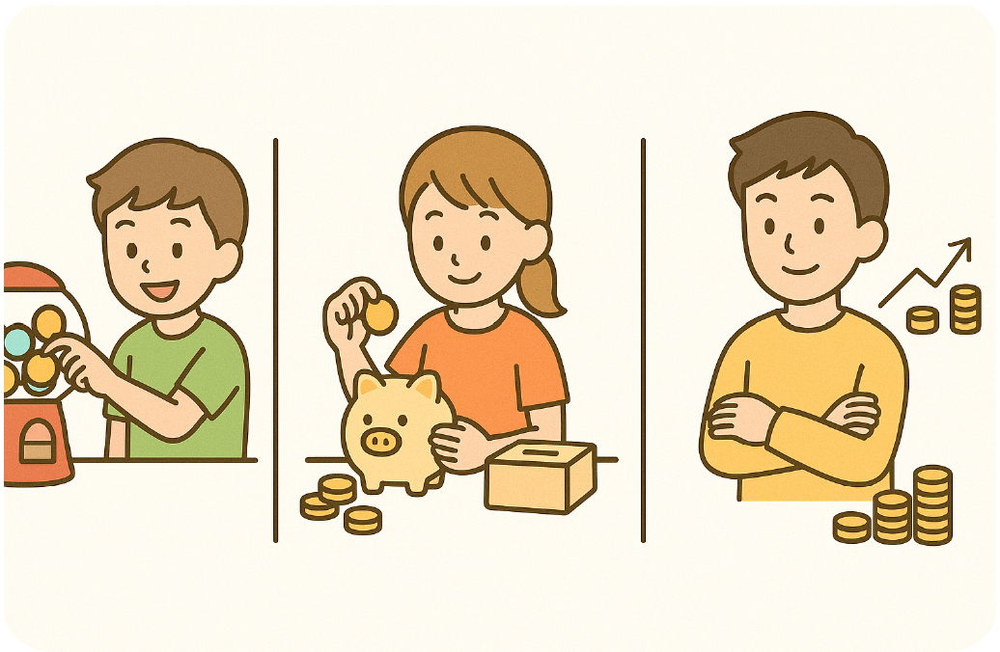

みなさんは、おこづかいをどうやって使っていますか？お金の使い道は、大きく分けて３つあります。

①使う
お菓子やゲーム、ガチャガチャなどに使うことです。ほしいものを買うと、楽しい気持ちがすぐに手に入ります。
②貯める
大きなものを買うために、お金をしばらく使わずにためておく。
「来月の新作グッズのために我慢する！」という人もいるかもしれませんね。
③増やす
これは少し難しい考え方ですが、「今あるお金を、少しでも増やす方法を考える」ということです。
お菓子やゲーム、ガチャガチャなどに使うことです。ほしいものを買うと、楽しい気持ちがすぐに手に入ります。
②貯める
大きなものを買うために、お金をしばらく使わずにためておく。
「来月の新作グッズのために我慢する！」という人もいるかもしれませんね。
③増やす
これは少し難しい考え方ですが、「今あるお金を、少しでも増やす方法を考える」ということです。

たとえば、ある子どもが1000円のおこづかいをもらったとします。
この1000円を使ってジュースを10本買い、友だちに1本120円で売ることができたら、10本で1200円。200円のもうけになります。
（※本当の生活では勝手に物を売ってはいけませんが、これは例え話として聞いてくださいね）
これが「お金を使って、お金をふやす＝投資」の考え方です。
この1000円を使ってジュースを10本買い、友だちに1本120円で売ることができたら、10本で1200円。200円のもうけになります。
（※本当の生活では勝手に物を売ってはいけませんが、これは例え話として聞いてくださいね）
これが「お金を使って、お金をふやす＝投資」の考え方です。

「投資」と聞くと、「株を買ったり売ったりして、お金をふやすこと」を思い浮かべる人がいるかもしれません。
たしかにそれも投資のひとつですが、投資はそれだけではありません
たとえば――
・習いごとに通って、自分の力をのばす
・将来のために本や文房具を買って勉強する
・人のためになることにお金を使って、信頼を得る
これらもすべて、「未来をよくするための使い方」という意味で立派な投資です。
たしかにそれも投資のひとつですが、投資はそれだけではありません
たとえば――
・習いごとに通って、自分の力をのばす
・将来のために本や文房具を買って勉強する
・人のためになることにお金を使って、信頼を得る
これらもすべて、「未来をよくするための使い方」という意味で立派な投資です。
投資とは、今あるお金を、将来の自分や社会のために使うこと。
お金は、すぐ使えば楽しさが得られますが、あとには何も残らないなんてこともあります。
でも、使い方を工夫すれば、もっと大きな楽しさや豊かさが返ってくることもあるんです。
お金は、すぐ使えば楽しさが得られますが、あとには何も残らないなんてこともあります。
でも、使い方を工夫すれば、もっと大きな楽しさや豊かさが返ってくることもあるんです。
・全部使ってしまうと、あとに何も残らない
・全部貯めてばかりだと、楽しさがない
・増やすことばかり考えると、うまくいかないこともある
これらのお金の特性を踏まえ、「使う・貯める・増やす」をバランスよく考えることが大切です。
おこづかいをもらったとき、こう考えてみてください。
これは何に使おうかな？」
「少しだけ貯金しておこうかな？」
「未来の自分のために使うとしたらどうだろう？」
その考えが、かしこい投資家への第一歩です。
・全部貯めてばかりだと、楽しさがない
・増やすことばかり考えると、うまくいかないこともある
これらのお金の特性を踏まえ、「使う・貯める・増やす」をバランスよく考えることが大切です。
おこづかいをもらったとき、こう考えてみてください。
これは何に使おうかな？」
「少しだけ貯金しておこうかな？」
「未来の自分のために使うとしたらどうだろう？」
その考えが、かしこい投資家への第一歩です。